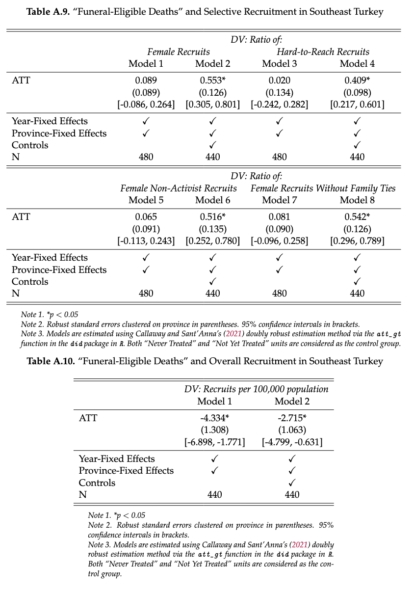
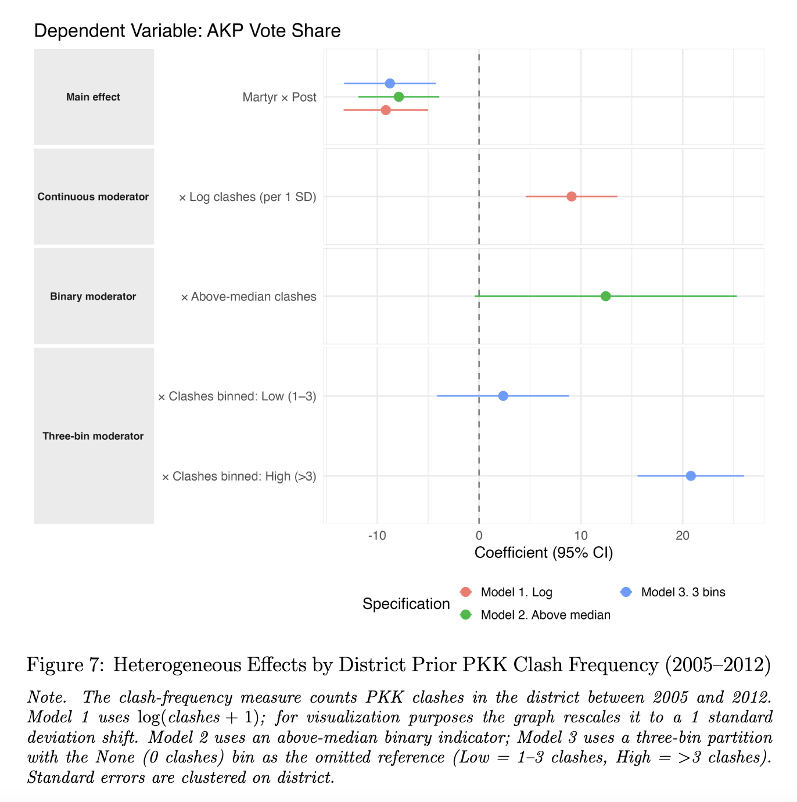
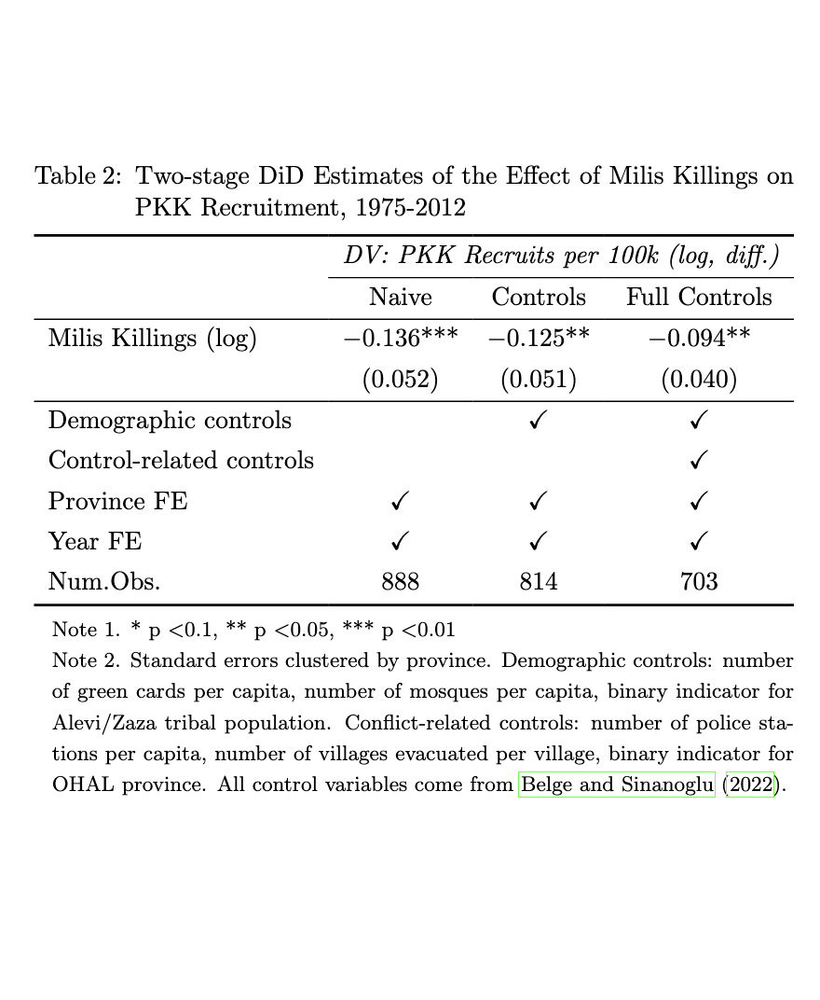
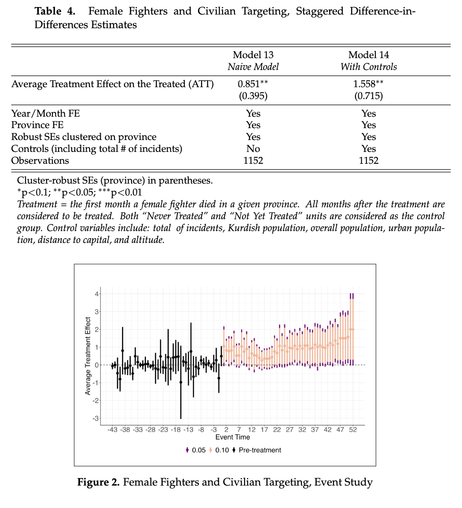
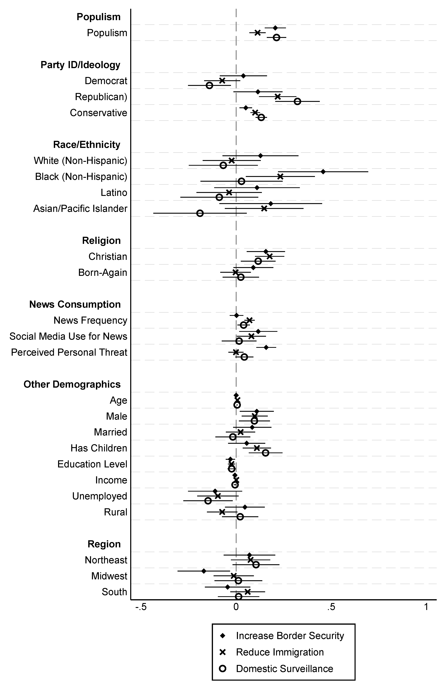
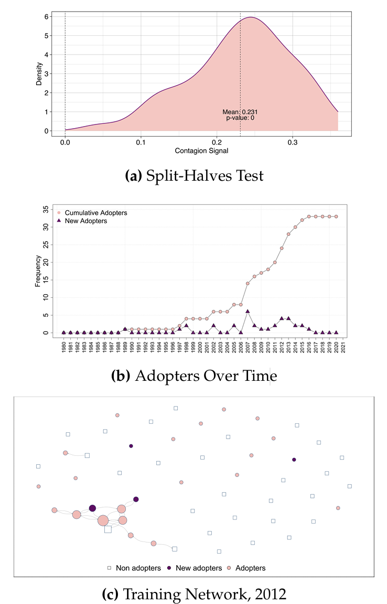
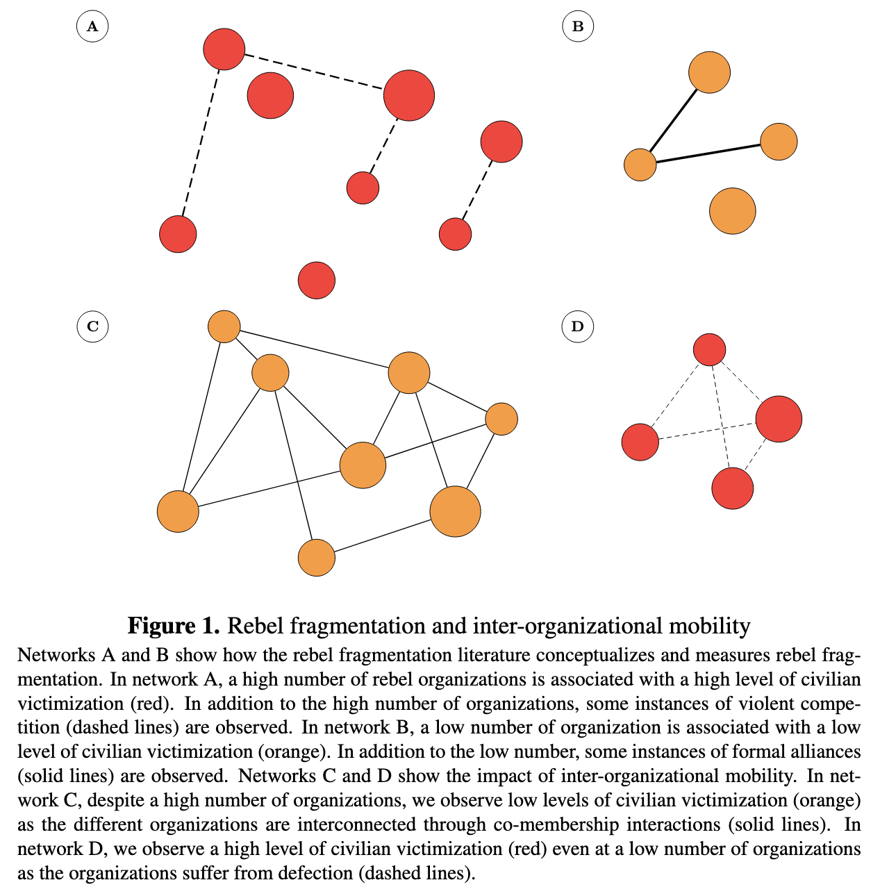
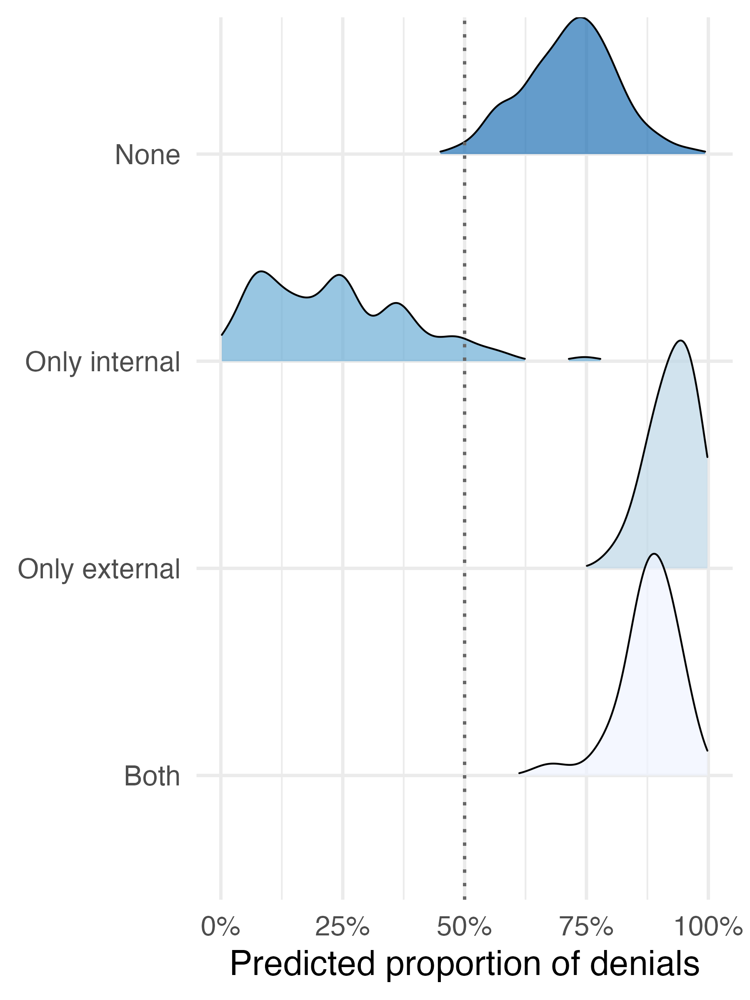
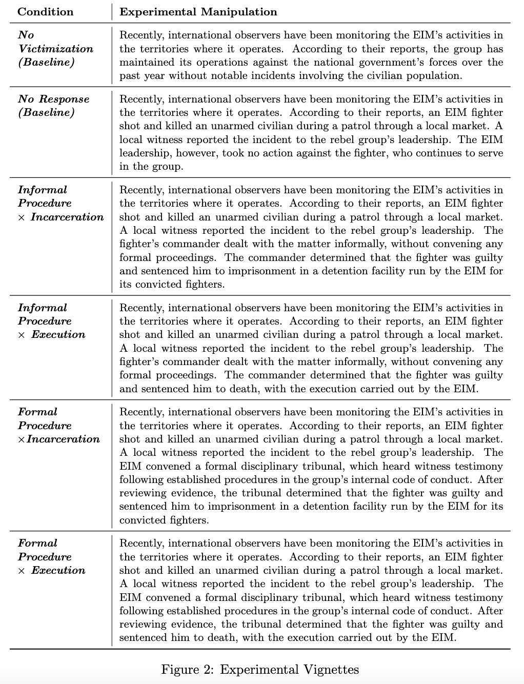

My ongoing projects span four lines of inquiry. On rebel-civilian ties: I study how rebels' interaction with civilians shape conflict processes. On rebel public communication strategies: I explore how groups use public communication to shape perceptions of their violence. On multi-party conflicts: I examine how inter-group cooperation and competition shape strategic decision-making. On rebel intra-group politics: I focus on how rebel internal governance (i.e., institutions and practices that enforce fighter behavior) and leadership dynamics influence conflict processes. Below is a selection of my ongoing projects.

Performative Rebel Governance and Legibility
Rebel groups engage in performative governance acts that mimic the symbolic repertoires of sovereign states, such as martyr funerals or mass demonstrations. How do these acts shape civilian participation in rebellion? I conceptualize performative rebel governance as a legibility-oriented strategy through which rebels map civilian loyalties beyond their immediate networks. Voluntary participation in public acts allows rebels to identify potential supporters who might otherwise remain outside the movement, including women and politically inactive individuals. At the same time, these acts increase the visibility of rebellion to the state, exposing participants to surveillance and raising the costs of mobilization. Using a difference-in-differences design that combines original data on PKK fighter funerals in Southeast Turkey with individual-level recruitment data, I show that rebel funerals expand recruitment among harder-to-reach groups while reducing overall mobilization. Rebel governance in contested spaces thus entails a dilemma: efforts to increase legibility also increase legibility to the state.
Pre-Print
Kin-Soldier Martyrs and Incumbent Electoral Support in Rebel Constituencies
Civil wars often witness members of the population rebels claim to represent serving as soldiers in the state forces that fight them. How do their battlefield deaths shape electoral support for the incumbent in the rebels' claimed constituency? I theorize that these "kin-soldier martyrs" erode the credibility of rebels' claim to fight on their constituency's behalf, while local legacies of war shape how civilians assign blame for them. I test this using Turkey's lottery-based conscription system for causal identification, combining an original dataset of conscripts from Kurdish provinces who died fighting Kurdish insurgents with electoral records and a national survey. Within Kurdish provinces, these "kin-soldier martyrs" produce incumbent gains where the rebels' constituency is locally dense and where prior rebel-state combat is heaviest. Placebo tests and survey evidence corroborate the mechanisms. The findings recast wartime electoral accountability as contingent on rebel constituency politics, with implications for counterinsurgency and ethnic voting.
Pre-Print
Part-Time Rebels
How rebels sustain recruitment under state repression remains underexplored. Extending constituency-centric theories of conflict, I advance a principal-agent explanation of rebel recruitment focused on "part-time rebels": intermediaries who straddle civilian communities and rebel groups. Casting civilians as principals and rebels as agents, I argue that repression exacerbates principal-agent problems through negative divergences (rebel predation that undermines civilian trust) and positive divergences (rebels prioritizing longer-term goals over immediate civilian preferences). Part-time rebels mitigate these by holding fighters accountable, mediating civilian-rebel disputes, and justifying strategic decisions in ways that preserve trust, thereby sustaining recruitment under repression. I test two implications. First, groups with a substantial part-time rebel reservoir should rely less on forced recruitment under repression. Using data on the organizational origins of 327 groups to identify those rooted in civilian organizations, I find such groups are significantly less likely to escalate to systematic forced recruitment under repression, while others increasingly resort to coercion. Second, state neutralization of part-time rebels should hinder voluntary recruitment. Focusing on the PKK insurgency in Southeastern Turkey, I combine original spatial data on the state's killing of part-time rebels with fighter-recruitment data (1975-2012). Using a staggered difference-in-differences design, I find neutralizations significantly reduce recruitment growth at the province level. Together, the findings highlight the understudied role of peripheral actors in sustaining insurgent mobilization, with implications for rebel governance and counterinsurgency.
Pre-Print
Female Fighters and Rebel Compliance with International Humanitarian Law
(with Merve Keskin, Yu Bin Kim, and Blair Welsh)
This paper examines the relationship between women's participation in rebel organizations and rebel compliance with international humanitarian law (IHL). Existing scholarship often treats female combatant recruitment as evidence of progressive ideology, implicitly associating women's inclusion with improved IHL compliance and reduced harm to civilians. We argue that this view overlooks the strategic role that gendered recruitment can play in rebel legitimacy management. We begin with a cross-national analysis showing that rebel groups that recruit female combatants are significantly more likely to publicly commit to IHL through written documents, which suggests that women's inclusion is tied to international reputational concerns. We then develop a theoretical framework linking gendered recruitment to rebel strategies of legitimation, arguing that female participation can help offset the reputational costs of civilian victimization. To probe this, we turn to subnational evidence from the Kurdistan Workers' Party (PKK) in southeast Turkey. Using original province-month data, we examine how variation in the share of female PKK combatants relates to civilian targeting. We find consistent evidence that higher female fighter ratios are associated with an increased likelihood, frequency, and share of civilian-targeting incidents. Taken together, our findings suggest that women's participation in rebel groups serves multiple strategic functions. While female recruitment is associated cross-nationally with symbolic commitments to IHL, it can also facilitate violence against civilians by reducing the perceived moral and political costs of such violence. The paper advances debates on rebel governance, civilian victimization, and gender in armed conflict by demonstrating how women's participation can be strategically instrumentalized to reconcile legitimacy-seeking with coercive practices.

Right-Wing Populism and Counterterrorism Preferences
(with James A. Piazza)
How do right-wing populist attitudes shape citizens' counterterrorism policy preferences? While a growing literature examines the foreign policies pursued by populist leaders, far less is known about how populist attitudes at the mass level translate into preferences on international security issues. We address this gap by focusing on the United States. Drawing on the ideational approach to populism, we argue that the defining features of right-wing populism—anti-elitism, a Manichean worldview, and a nativist conception of “the people”—generate distinct counterterrorism preferences that operate through three mechanisms: support for strongman rule, perceived threats from outgroups, and conspiratorial thinking. Using an original survey of 1,940 U.S. respondents fielded in 2023, we find that individuals holding right-wing populist attitudes are more likely to support unilateral, militarized responses to terrorism abroad while expressing no greater support for multilateral cooperation or democracy promotion. Domestically, they favor restrictive immigration and border policies and expanded surveillance, detention, and arrest powers. Structural equation models show that support for strongman rule, outgroup threat perceptions, and conspiratorial thinking substantively mediate these relationships, with effects that persist after accounting for partisanship and ideological conservatism. The findings suggest that right-wing populist attitudes exert an independent influence on counterterrorism preferences in the U.S. context.
Pre-Print
Inter-Group Learning and Diffusion in Militant Alliances
This study examines how the nature of alliances shapes militant groups' capacity to adopt tactics that demand organizational change. Challenging the view that tactical diffusion is an automatic byproduct of alliances, I argue that only alliances involving joint training, rather than those limited to arms, funds, or rhetorical support, facilitate the mindset shifts, socialization processes, and skill acquisition needed for adopting new tactics from allies. Joint training fosters not only elite-level exchanges but also fighter-level interactions that build shared norms, understandings, and practices. I test this argument with an original cross-sectional time-series dataset on 53 militant groups in Northeast India (1980–2021), focusing on the diffusion of kidnapping—a tactic that requires normative reorientation toward restraint and non-combat skills. Evidence from split-halves tests, staggered difference-in-differences analyses, panel vector autoregression models, and additional analyses leveraging placebo tests and exogenous shocks shows that alliances involving joint training with kidnapping-proficient allies significantly increase adoption, whereas other alliance forms do not. Once adopted, kidnapping persists, consistent with a complex contagion process in which norms and practices are reinforced within a community of interacting groups. By linking tactical diffusion to organizational learning, the findings show how specific inter-militant interactions can drive organizational change, opening avenues for research on whether similar mechanisms transmit norms and practices beyond violence, including governance, diplomacy, and transnational campaigning.
Pre-Print
Limits to Fragmentation? The Impact of Defection and Co-Membership on Civilian Victimization
(with Finn Klebe)
What explains the variation in the level of civilian victimization during conflict? Extant research suggests that competition over territory and resources can lead to outbidding dynamics and higher levels of civilian victimization. However, the underlying conceptualization and measurement of competition is often reserved to the number of organizations and their violent battles, only. We introduce the concept of inter-organizational mobility, that is co-membership and defection as interactions on an individual level, to re-assess the variation in civilian victimization. We argue that co-membership can induce stability and cohesion, lowering the need for outbidding and civilian victimization. Conversely, defection undermines organizations' reputation as high-capacity actors, heightening the risk of outbidding and civilian victimization. We leverage a novel dataset on defection and co-membership in Africa from 1990–2015 and use two case episodes on South Africa and Angola to further illustrate the causal mechanism. Our varied empirical evidence converges: Co-membership can dampen levels of violence, even offsetting the impact of a high number of organizations. Defection exacerbates levels of civilian victimization even at a low number of organizations. The findings add an important scope to the ‘numbers’ argument in our study of conflict and emphasize the importance of relational patterns beyond violent competition, only.

Civilian Victimization by Governance-Oriented Rebels
(with Hongbi Choi)
Why do governance-oriented rebel groups victimize civilians while building state-like institutions? Existing theories treat governance and violence as substitutes for securing civilian compliance, yet many rebels pursue both simultaneously. To address this puzzle, we advance a theory that disaggregates rebel institutions by purpose and target, distinguishing between internal institutions that regulate fighters and external institutions that regulate civilians. Drawing on insights from the literatures on civil war and authoritarian politics, we theorize how different combinations of internal and external governance shape civilian victimization by constraining, or failing to constrain, two pathways to harm: leader-authorized strategic violence and leader-disavowed opportunistic violence by rank-and-file combatants. To test the observable implications of this theory, we introduce a novel dataset on rebel internal governance and pair it with existing data on civilian-facing governance institutions and civilian victimization. Using a research design that exploits the unexpected death of rebel leaders to address endogeneity concerns, we analyze 166 rebel organizations operating in 57 countries between 1990 and 2012. We corroborate these findings with granular subnational evidence from the PKK insurgency. Across levels of analysis, we find that governance institutions reduce civilian victimization only when they jointly regulate both fighters and civilians. Internal or external institutions alone fail to produce systematic reductions in civilian harm. A complementary analysis of public claims and denials of attacks across MENA rebel organizations further supports our theoretical distinction between leader-authorized and leader-disavowed violence: internal institutions are associated with claiming attacks while external institutions are associated with denying them. These findings show that rebel governance can coexist with, enable, or constrain violence depending on whom institutions are designed to control, refining theories of rebel governance and offering a more nuanced account of civilian life under armed group rule.

Opportunistic Rebel Violence against Civilians, How Groups Sanction It, and Foreign Public Opinion
(with Hongbi Choi)
How do the way rebel groups respond to opportunistic violence against civilians by their own fighters shape foreign public opinion toward them? While existing research has examined various forms of rebel behavior, such as service provision, how groups internally handle misconduct remains underexplored. We argue that how groups respond to such misconduct gives foreign publics an informational basis for evaluating rebel legitimacy. Three features of groups' response to misconduct are informative: whether they sanction the offending fighters at all, whether they adjudicate the misconduct through formal procedures or informal discretion, and how severely they punish it. We test this argument using a preregistered survey experiment in the U.S., randomizing respondents across six conditions: a no-violence-against-civilians baseline, a violence-against-civilians-without-group-response baseline, and a 2×2 factorial crossing the formality of the procedures used to investigate the offense with the severity of the punishment imposed on the offending fighter. We expect that sanctioning a fighter and adjudicating through formal procedures increase foreign public support, whereas the effect of severe punishment such as execution is ambiguous. We further theorize and test whether these effects operate through perceived benevolence, state-like capacity, and norm compliance. This study extends the literature on rebel governance, which has largely examined how rebels govern civilians, by showing that how groups govern their own fighter is a previously underexplored determinant of foreign public opinion.